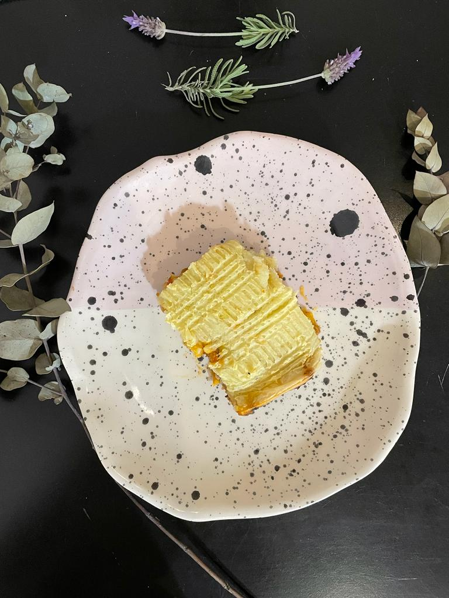

Salados
Pastel de papas

Ingredientes
- 1 kilo de papas
- 1 Coliflor mediano
- 2 Cebollas medianas
- 1 Cebolla de verdeo
- 2 Dientes de ajo
- 200 ML de Bebida vegetal
- Aceite
- Condimento de pizza
- Provensal
- Pimenton dulce
- Sal
- Nuez moscada
Condimentos
Procedimiento
Relleno
- Corta la cebella, el verdeo y el ajo en trozos chiquitos y saltear en una olla con un poco de aceite hasta dorar
- Agregar el condimento de pizza ,el provensal y el pimenton dulce
- Cortar el coliflor en trozos muy pequeños y agragar a la olla
- Salar a gusto y esperar a que el coliflor se cocine (revolver cada 3 minutos)
Pure
- Pelar las papas y cortarlas en trosos chicos
- Colocar en una olla con agua (si quiere puede salar el agua) hasta hervir y que esten bien blandas
- Una vez blandas colar y colocar en un bowl
- Agregar la bebida vegetal y la nuez moscada (a gusto)
- Pisar con pisa papas hasta formar el pure
Armar el pastel
- En una bandeja para horno previamente aceitada formar una base con la mitad del pure
- Colocar el relleno y cubrir con lo restante del pure
- Llevar a horno precalentado por 20 minutos